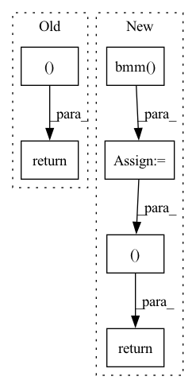

Pattern ID :11086
Before Change
codevectors = codevectors.reshape(batch_size, sequence_length, -1)
return codevectors, perplexity
After Change
codevector_probs = codevector_probs.view(batch_size * sequence_length, self.num_groups, -1)
codebook = self.codevectors[0, :, :]
codebook = codebook.view(self.num_groups, self.num_vars, -1)
codevectors = torch.bmm( codevector_probs.permute(1, 0, 2), codebook) .permute(1, 0, 2)
codevectors = codevectors.reshape(batch_size, sequence_length, -1)
codevectors = codevectors.reshape(batch_size, sequence_length, -1)
return codevectors, prob_perplexity, code_perplexity
In pattern: SUPERPATTERN
Frequency: 3
Non-data size: 6
Instances Fragment ID: 38160466
Project Name: huggingface/optimum-graphcore
Commit Name: 2ec4ed72ea362414d20c9b112072f3aa7b3d399a
Time: 2022-07-29
Author: 91201457+thorinf@users.noreply.github.com
File Name: optimum/graphcore/models/wav2vec2/ipu_gumbel_vector_quantizer.py
M Class Name: IPUWav2Vec2GumbelVectorQuantizer
N Class Name: IPUWav2Vec2GumbelVectorQuantizer
M Method Name: forward(4)
N Method Name: forward(4)
M Parent Class: Wav2Vec2GumbelVectorQuantizer
N Parent Class: Wav2Vec2GumbelVectorQuantizer
M File Name: optimum/graphcore/models/wav2vec2/ipu_gumbel_vector_quantizer.py
N File Name: optimum/graphcore/models/wav2vec2/ipu_gumbel_vector_quantizer.py
M Start Line: 68
M End Line: 102
N Start Line: 80
N End Line: 110
Before Change
if (torch.sum(torch.isnan(cam_coords)) > 0) or (torch.sum(torch.isinf(cam_coords)) > 0):
print("Warning: Nan or Inf values in camera coordinate tensor.")
return cam_coords, valid_points After Change
print("Warning: Nan or Inf values in camera coordinate tensor.")
T_c2_c0 = cam_calib["T_c2_c0"].unsqueeze(0).expand(batch_size, 4, 4).cuda()
cam_coords = se3_inv(T_c2_c0).bmm( cam_coords)
return cam_coords[:, :3, :], valid_points Fragment ID: 38160464
Project Name: utiasasrl/hero_radar_odometry
Commit Name: c612e851d17258f40a9dde6a641dc127c27fbe7a
Time: 2020-08-16
Author: mona.gridseth@robotics.utias.utoronto.ca
File Name: utils/stereo_camera_model.py
M Class Name: StereoCameraModel
N Class Name: StereoCameraModel
M Method Name: inverse_camera_model(4)
N Method Name: inverse_camera_model(3)
M Parent Class: nn.Module
N Parent Class: nn.Module
M File Name: utils/stereo_camera_model.py
N File Name: utils/stereo_camera_model.py
M Start Line: 239
M End Line: 239
N Start Line: 164
N End Line: 194
Before Change
out = torch.matmul(w.transpose(1, 2), encoder_outputs)
return out, w
class DurationPredictor(nn.Module):
Duration Parameter Predictor After Change
w = w.masked_fill(mask.unsqueeze(-1), 0.0)
attn = w / (torch.sum(w, dim=1).unsqueeze(1) + 1e-8) // [B, L, T]
out = torch.bmm( attn.transpose(1, 2), encoder_outputs)
return out, attn
class DurationPredictor(nn.Module):
Duration Parameter Predictor Fragment ID: 38160463
Project Name: keonlee9420/wavegrad2
Commit Name: 523ec241c64ab635218f32d071fd85fbc469e178
Time: 2021-07-13
Author: keonlee9420@gmail.com
File Name: model/modules.py
M Class Name: GaussianUpsampling
N Class Name: GaussianUpsampling
M Method Name: forward(4)
N Method Name: forward(4)
M Parent Class: nn.Module
N Parent Class: nn.Module
M File Name: model/modules.py
N File Name: model/modules.py
M Start Line: 115
M End Line: 135
N Start Line: 120
N End Line: 134